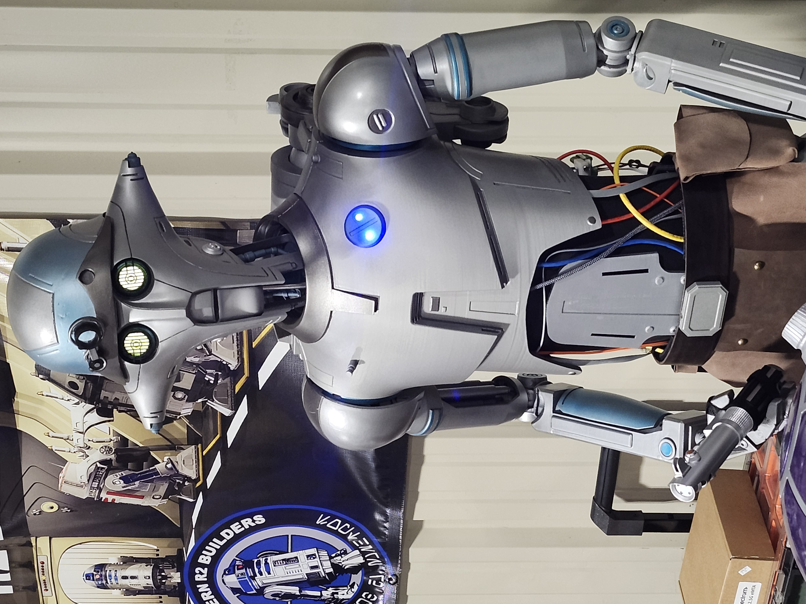
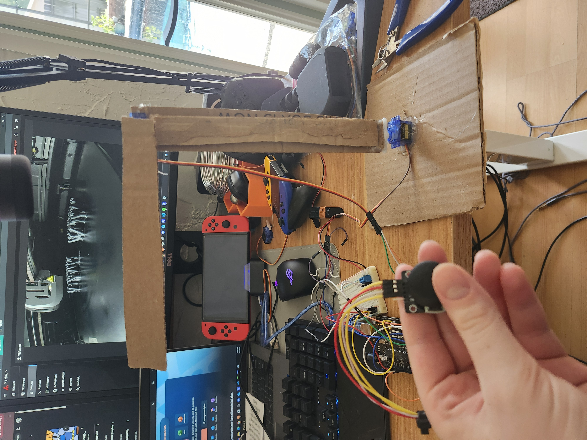
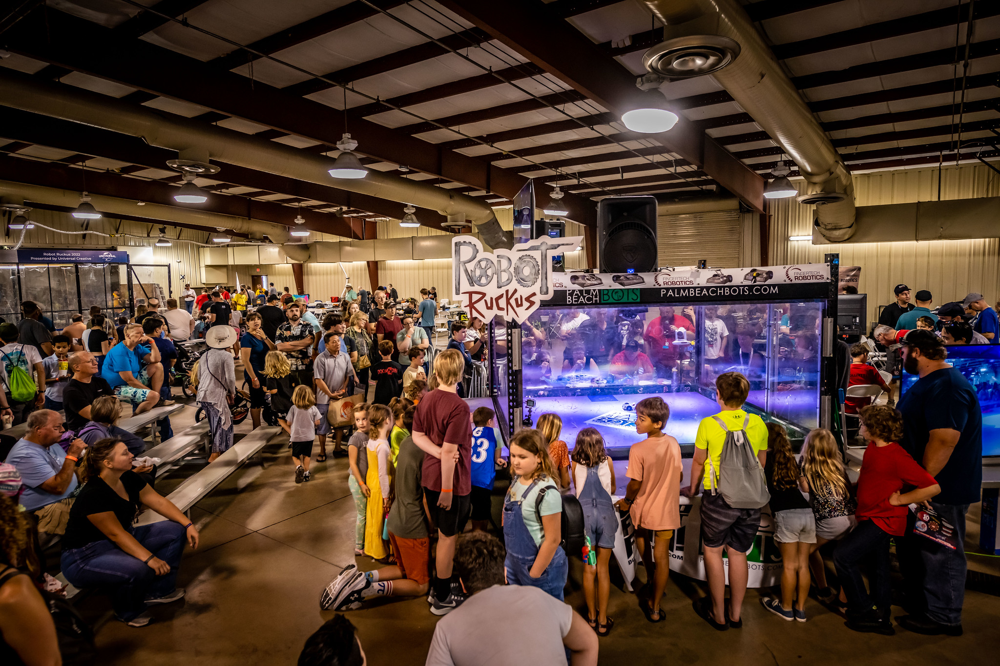
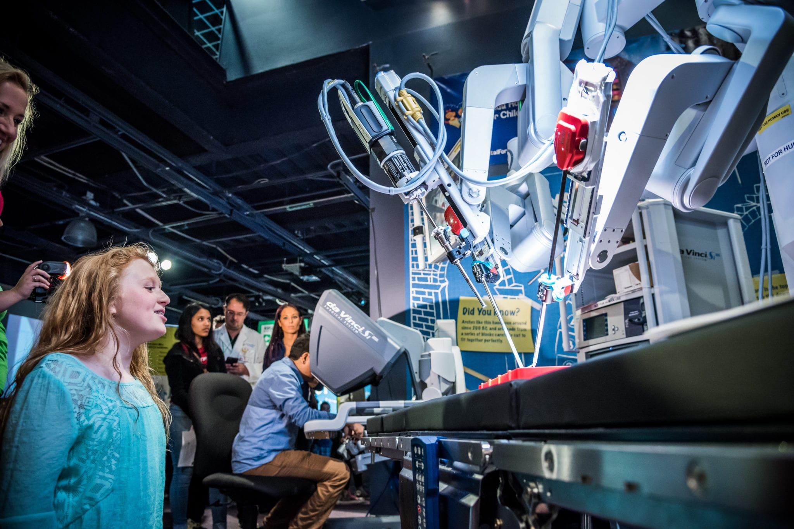
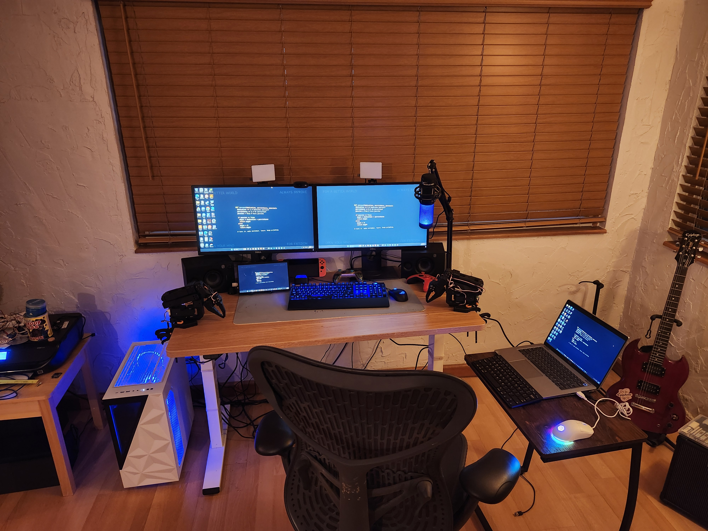
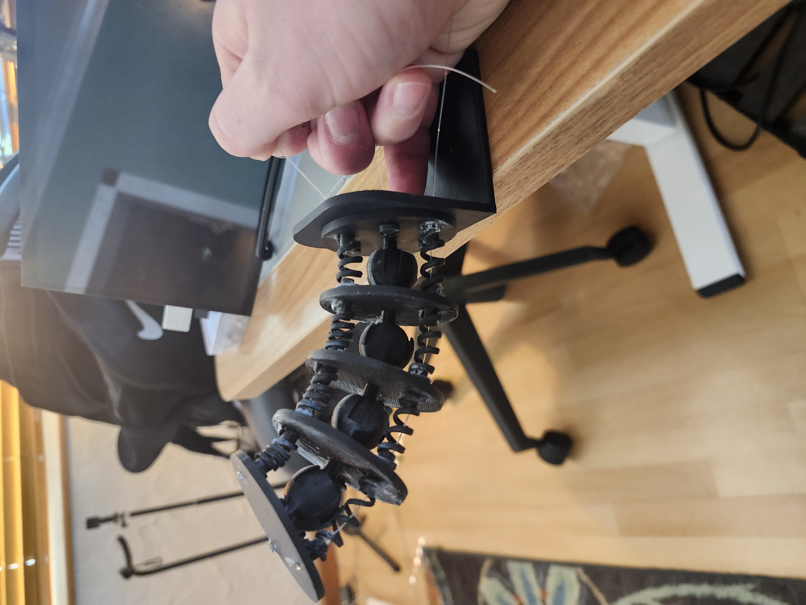
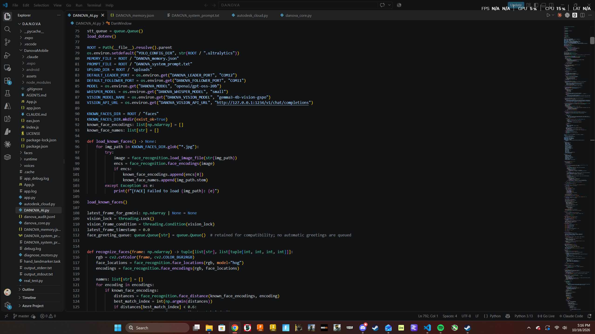
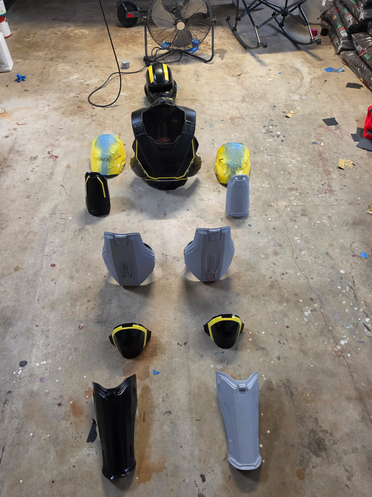

Experiences
Experiences I've Had

Maker Faire
I've been going to Maker Faire since I was about 2 years old. Every year in November, they host it at the Central Florida Fairgrounds. They have combat robotics, cosplays, drones, StarWars droids, art, stage talks/special guests, hands-on workshops, and all sorts of other things. My dad took me as soon as I was old enough to understand what was going on. We've gone every year since then and Maker Faire is one of the 3 big things that got me into 3D design and robotics.
Otronicon
Now named Spark STEM Fest, it used to be a science/tech event held at the Orlando Science Center. We started going to it when I was born as far as I can remember. One year we stopped going and haven't gone back since because they changed it from what it used to be. They had all sorts of science stuff, robots, more Star Wars droids, and one year they even had a Smash Bros. tournament. Otronicon was another one of the 3 big things that got me into my current hobbies.
SeaWorld
The first time we went to SeaWorld was in 2014 when I was 2 years old. We went with my grandma and stepgrandpa. It was my first time at an aquarium and I remember being upset because I was too little to ride anything. Even though I couldn't ride most anything, that experience still cemented my love for themeparking.
How They Shaped Me
Maker Faire
Maker Faire shaped me by introducing me to all sorts of technology like robotics and 3D printing. It also influenced my interests in engineering and design which is how I ended up learning so much about the field of robotics and 3D design.
Otronicon
Otronicon shaped me by introducing me to science and physics, as well as influencing my interest in robotics a bit as well.
SeaWorld
When I was about 2 years old, I went to SeaWorld with my mom dad, grandma, and step-grandpa. I remember being upset because I was too little to ride anything. Even though I couldn't ride most anything, that experience still cemented my love for themeparking.
Personality Traits
My Traits

Inquisitive
I've been told I'm a naturally curious person and I most always ask questions about something I want to learn about but I prefer to teach myself and be hands on instead of being told.
Innovative
I like to make things, I enjoy problem solving, and my favorite thing to do is to create or build something. Cosplays, robots, a 3D model, or even LEGOs.
Persistent
When something goes wrong in a program or a design, I don't give up easily and I won't stop working on it until it's fixed. When there's a challenge, I see it as an opportunity to learn and improve my skills.
How They Got Me Where I Am
Passions
My innovative nature makes creation really enojoyable for me and it drives my interests in design and robotics.
Friends
My personality allows me to connect with others who share the same level of passion for learning and creating, as well as people who share similar interests to mine like design and 3D printing.
Hobbies
My personality has influenced my hobbies like 3D printing and robotics through my love for creation and technology, as well as my love of learning.
Meaningful Places

Central Florida Fairgrounds
Maker Faire is held here every year.

Orlando Science Center
Otronicon (now Spark STEM Fest) used to be held here, as well as Pi(e) Day.

Home
I spend a lot of my time at home working on projects, programming something, designing 3D models, or hanging out with friends.
Hobbies & Interests

Robotics
I love building and programming robots, which allows me to combine my love for technology and problem-solving.

Programming
I enjoy writing all sorts of programs like games and AI agents. My dad started me with a Kano computer (block coding) when I was about 3 years old, which cemented my love of programming (and Minecraft).

3D Design/3D Printing
I like designing 3D models for robotics, toys, and other things like cosplays and printing them, which allows me to bring my ideas to life in a feasible way.